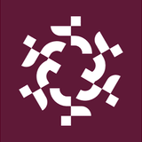
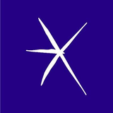

The three I'd hand you first: a product I engineered alone, a venture I'm building, and a launch I directed end to end. Each one is a working demo, not a screenshot.
Huddle transcribes a call on-device and, on a hotkey, suggests what to say next.
Frame 9 · Huddlescripted demo
Product & engineering · Sept 2026
Huddle
A private call companion for Windows. It transcribes both sides of a call on my laptop and, when I hold a hotkey, suggests what to say next.
French and British, grew up in London, now in Lille. I work in French, English and Spanish.
I like the whole journey of a thing: the idea, the build, and the moment someone else gets it.
That's why the same project might have code, a film and a pitch in it. Off the clock I make music and DJ, build small games, and spent nine years in the scouts in London, leading the younger members in my last years.
Where I've worked
CosysenseBusiness model consultant: model, risk-ranked assumptions and pilot plan for a climate-tech start-up
Gentek.aiMarketing, sales & product intern, London and Lisbon: led campaign strategy and execution
ACdOJunior consultant, Madrid: brand strategy for a luxury furniture house
HekaSales & partnerships intern, London

MSc Sustainable Business Transformation
EDHEC Business School
2026–27 · Lille
MSc Innovation, Entrepreneurship & Management
Imperial College Business School
2025–26 · London

BSc Management
ESCP Business School
2022–25 · Paris, Madrid, London
Frame 1 · 2025 · Study
ESCP graduation
BSc Management across three campuses in three years: Paris, Madrid and London. My bachelor's thesis looked at how people adopt AI at work.
Frame 2 · 2026 · Study
The Fabricant, Imperial
After our team presentation on The Fabricant and digital luxury, during my MSc in Innovation, Entrepreneurship & Management at Imperial College Business School. The year I started building my own things.
Frame 3 · 2025–26 · Media
Entrepreneurship Bites
A podcast I co-founded at Imperial to ask serial entrepreneurs how they really did it. Six guests, from outreach to recording to the final cut.
Campus immersion visits for high-school students from China and Taiwan choosing a UK university. I'm co-founder, CTO and CPO. Early stage: exploring a pilot, nothing formally agreed.
You're a comet and you can't steer. Hold to orbit a sun, let go to slingshot. A one-button browser game in plain canvas, with a quieter sibling called Geodrift.
A still from the 43-second film I made for Loop, a wardrobe app that asks "should I buy this?" against the clothes you own. I built the app and the site, made the film and pitched it. Top three at the EDHEC Sustainability Challenge.
The landing page and working app in one file. Every sustainability score comes from a fixed factor table, and uncertain figures are marked "AI estimated", never shown as fact.
A private call companion for Windows. It transcribes both sides of a call on my laptop and, when I hold a hotkey, suggests what to say next. Audio never leaves the machine. Solo build.